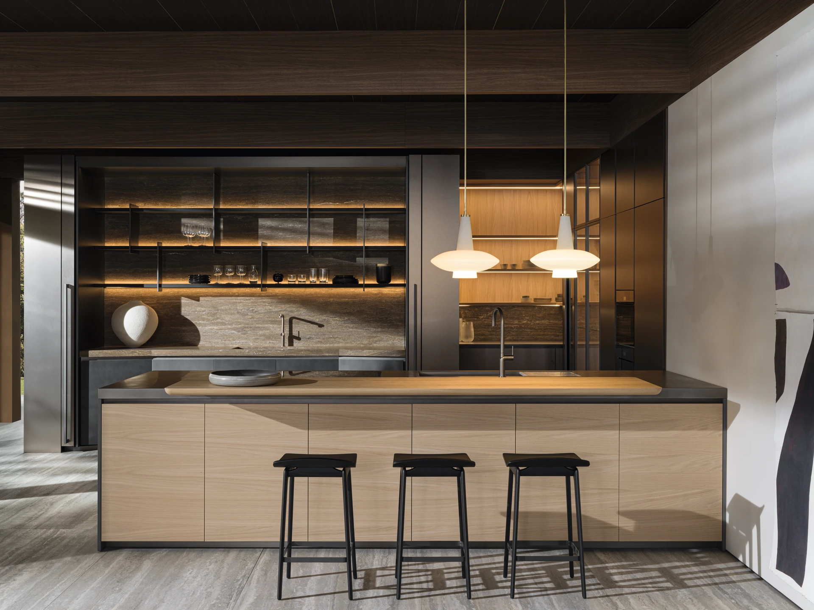
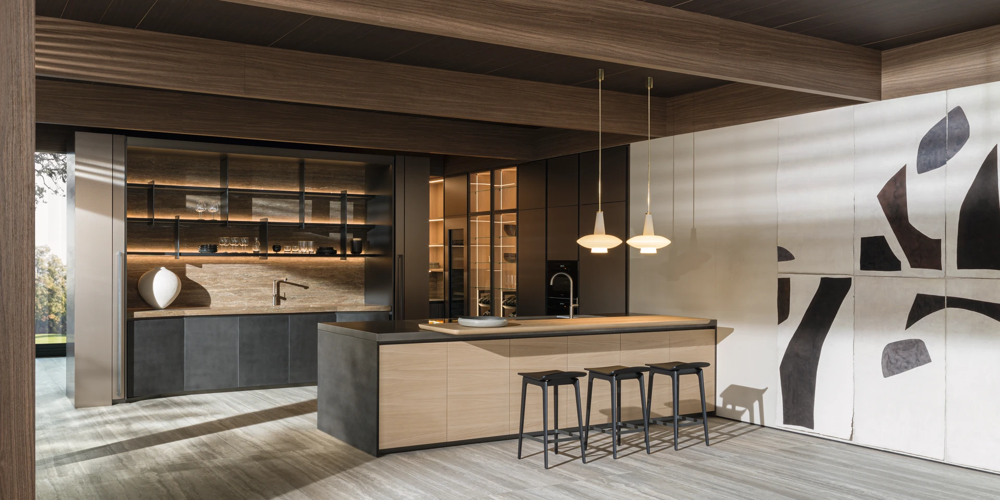
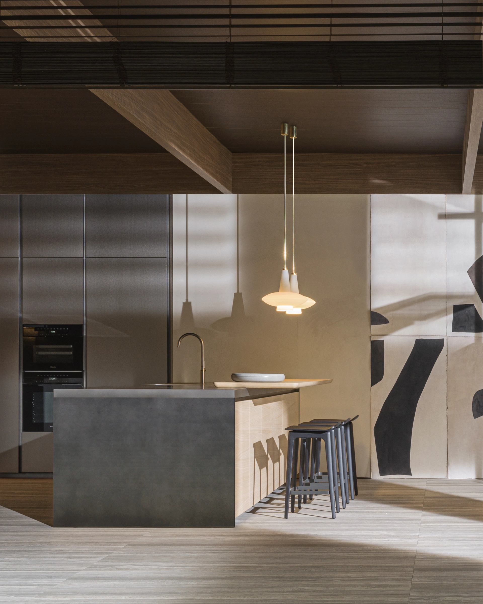
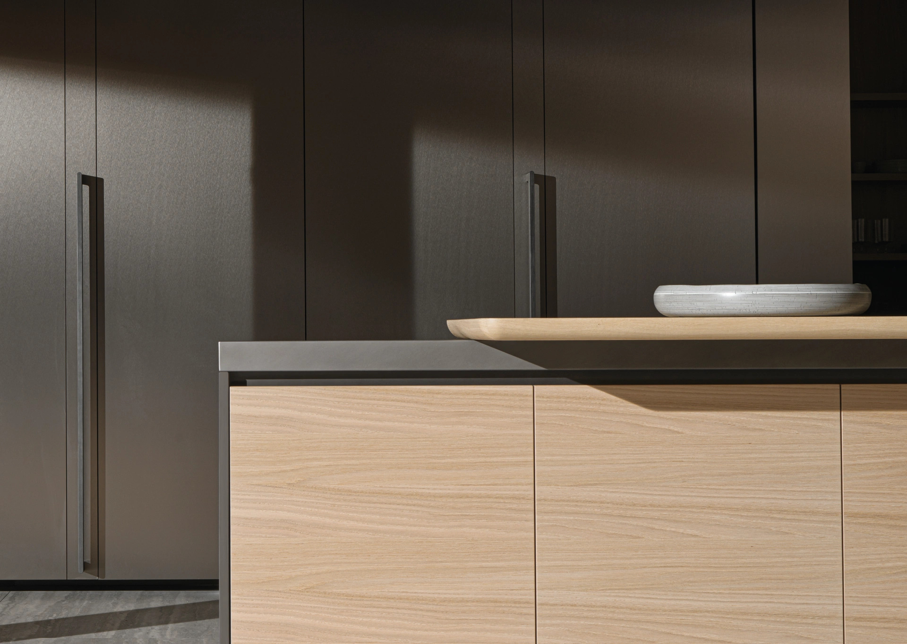
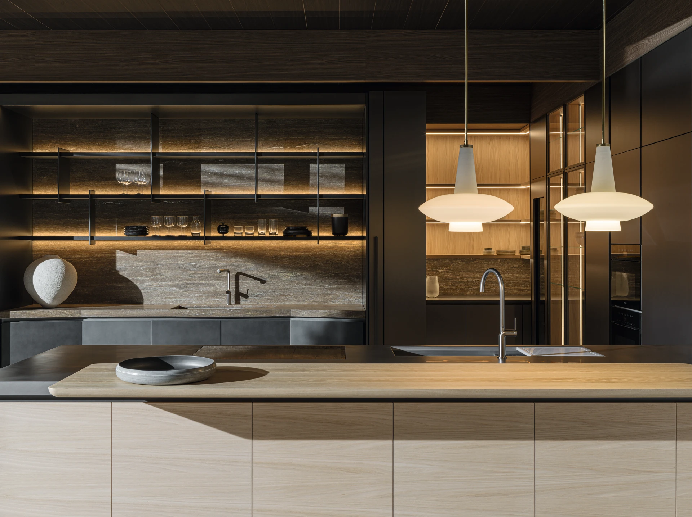
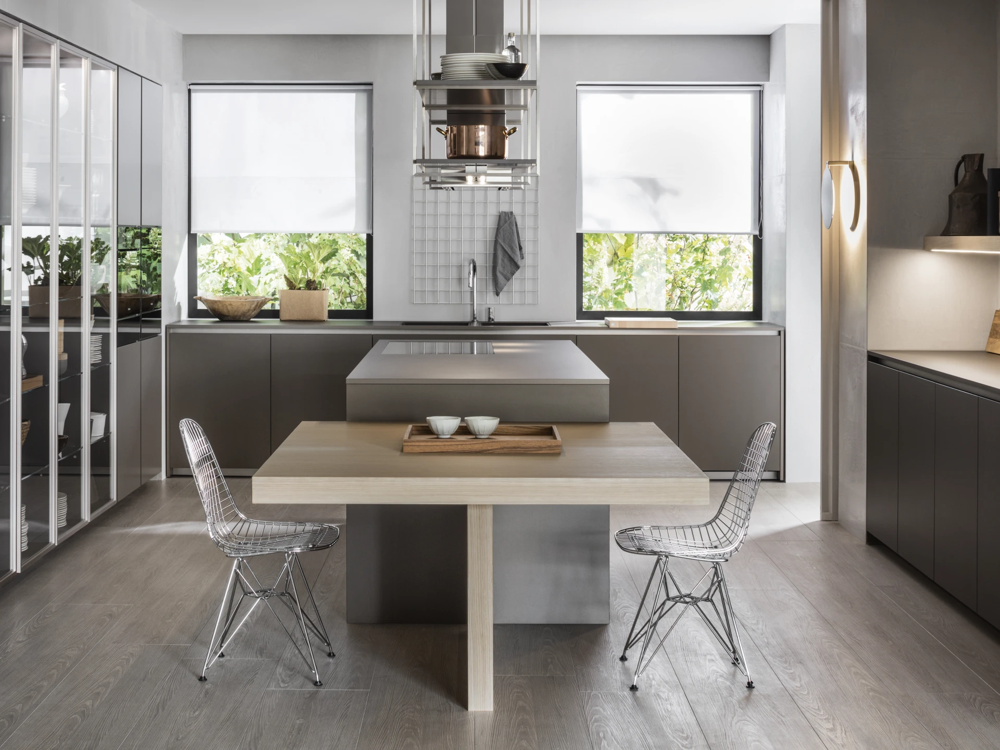
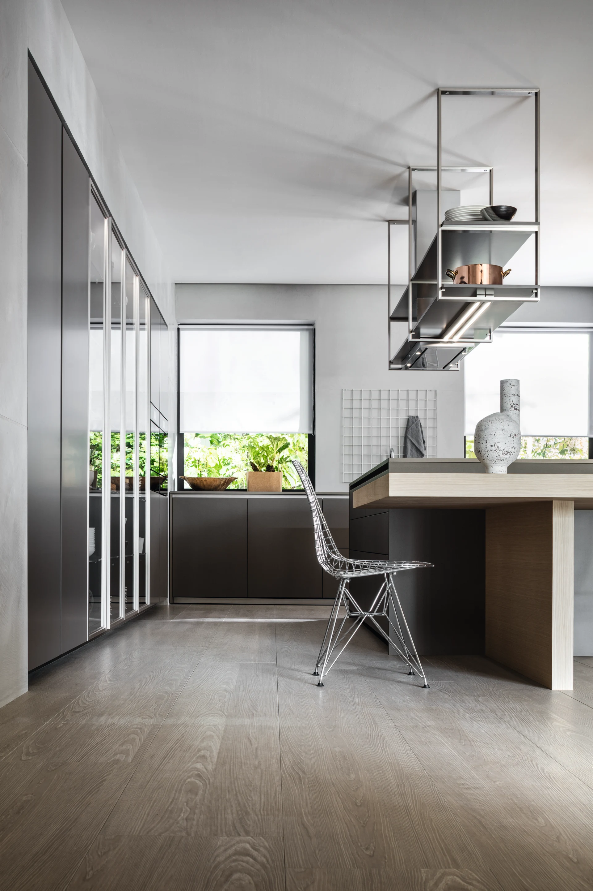

Hi-Line 6
Кухня превращается в архитектурное жилое пространство.
Hi-Line 6
Кухня превращается в архитектурное жилое пространство.
Дизайн: Ferruccio Laviani

Hi-Line 6 Ferruccio Laviani превращает кухню в архитектурное жилое пространство, соединяя геометрию, точность и теплоту в идеальной гармонии. Hi-Line 6 — яркий пример того, как совершенство дизайна превращает повседневность в нечто исключительное. Коллекция получила премию Elle Decor Design Award в 2007 году.

Чёткие, непрерывные линии делают композицию одновременно функциональной и скульптурной. Более высокие нижние модули увеличивают вместимость, гарантируя, что каждый элемент выполняет свою задачу. Отсутствие традиционных ручек подчёркивает лаконичный силуэт: пазы-захваты органично встроены для лёгкого открывания и закрывания дверей.

Hi-Line 6 предлагает множество вариантов конфигурации, легко адаптируясь под разные интерьеры и уклады жизни. Модульная структура позволяет собирать индивидуальные композиции — от открытых просторных решений до более компактных вариантов. Каждый вариант отражает богатство материалов и точность исполнения.

Для дополнительной гибкости система поддерживает несколько вариантов открывания помимо утопленного паза-захвата: скрытые ручки и механические или электрические механизмы push-pull. Каждая деталь выполнена по стандарту Dada Engineered, сочетая инновационную функциональность с безупречным мастерством (источник: molteni.it).

- Elle Decor Design Award, 2007
- Высокие нижние модули — увеличенная вместимость
- Открывание: встроенные пазы-захваты, скрытые ручки или механизмы push-pull

Ferruccio Laviani
Итальянский дизайнер и архитектор, сотрудничает с Molteni&C с 1999 года. Известен смелым, скульптурным подходом к мебели и интерьерным объектам.
Обсудить проект
из коллекции Hi-Line 6
Персональная консультация по конфигурации и материалам.